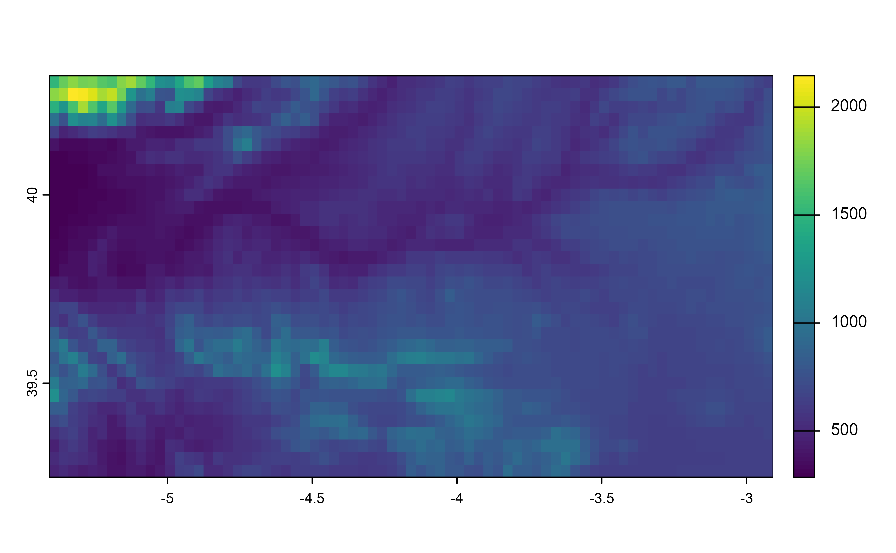

Helper function. Ratio is computed as width/height (or col/rows).
Arguments
- x
A
SpatRasterobject, ansf/sfcobject or a numeric vector of length 4 with coordinates c(xmin,ymin,xmax,ymax), as created bysf::st_bbox().
Examples
# \donttest{
library(terra)
#> terra 1.8.93
x <- rast(system.file("tiff/elev.tiff", package = "rasterpic"))
plot(x)

asp_ratio(x)
#> [1] 2.34375
# }